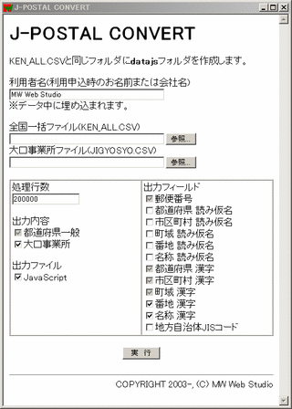
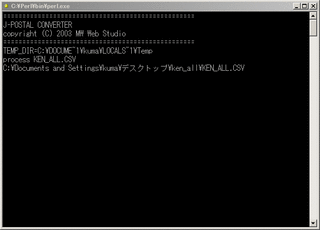
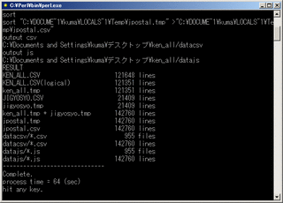

|
J-POSTALトップ
jpostal_convert.hta
郵政公社のKEN_ALL.CSV、JIGYOSYO.CSVから、J-POSTAL用郵便データファイルを作成します。
Windows用HTMLアプリケーションが動作すること、および、ActivePerl(Windows用Perl)が必要です。
動作確認環境は、Windows98SE、WindowsXP
Pro SP1 です。

使用方法
- 郵政公社データのダウンロードと解凍
郵政公社のホームページから、都道府県データの全国一括(ken_all.lzh)と大口事業所の最新全データ(jigyosyo.lzh)をダウンロードし、解凍します。解凍ファイルは、D:\jpostal_20030610\の下に保存したとします。
[利用者名]欄に会社名または個人名を入力します。データ中に埋め込まれます。不正利用追跡の参考にしますので、ご協力お願いします。
- [全国一括ファイル]欄の[参照]ボタンを押し、D:\jpostal_20030610\KEN_ALL.CSV
を選択します。
- [大口事業所ファイル]欄の[参照]ボタンを押し、D:\jpostal_20030610\JIGYOSYO.CSV
を選択します。
- その他の項目は、MW Web Studio開発用です。変更する必要はありません。
- [実行]ボタンを押します。
MS-DOSプロンプトが開き、処理の経過が表示されます。

- MS-DOSプロンプトに「compelete. hit any
key」と表示されたら、処理完了です。何かキーを押してください。MS-DOSプロンプトが閉じます。
※処理時間の参考、Windows XP Pro +
Athron XP 1700 で、64秒です。

- J-POSTAL用の郵便データファイルは、D:\jpostal_20030610\datajs\*.js
です。datacsv\*.csvはフォルダごと削除してかまいません。
実行前のファイル構成
D:\jpostal_20030610\
KEN_ALL.CSV
JIGYOSYO.CSV
実行後のファイル構成
D:\jpostal_20030610\
KEN_ALL.CSV
JIGYOSYO.CSV
datacsv\ datacsvフォルダごと削除できます。
001.csv
002.csv
...
999.csv
datajs\ J-POSTAL用の郵便データファイル
001.csv
002.csv
...
999.csv
J-POSTALトップ
|